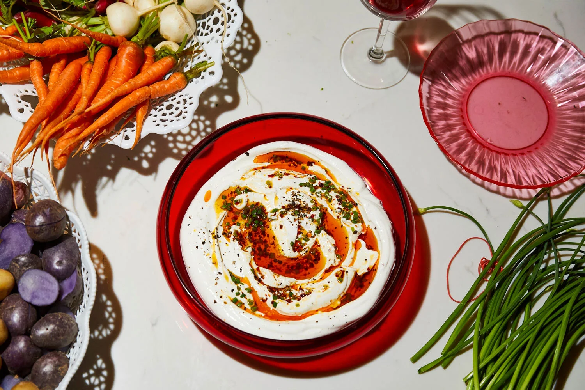

Description
Among some of my friends, this has become known as “The Dip,” and now I literally cannot attend
any social gathering or host any dinner party without someone requesting “The Dip.” When you make it
, you’ll know why. It’s my very high-brow version of ranch dressing, and that’s all the intel you
need. But if you’d like to know more, there is a scalliony chile oil that gets sizzled with cilantro
stems (or chives) and swirled into thick, lemony labne. From there, I’m sure you can assume that the
combination of tangy dairy coupled with that herby chile oil already sounds incredible, and maybe you
are on your way to making this right now. If you can find green garlic (which tends to be hyper-seasonal
and mostly found only at farmers’ markets), use them (or even ramps!) in place of the scallions.
Ingredients
- ⅓ cup olive oil
- 4 scallions (or green garlic), white and light green parts, thinly sliced
- 1 teaspoon red-pepper flakes
- 2 tablespoons finely chopped fresh cilantro (leaves and tender stems) or chives, plus more for garnish
- Flaky sea salt
- Freshly ground black pepper
- 2 cups labne, full-fat Greek yogurt or sour cream
- 2 tablespoons fresh lemon juice
Steps
- Heat the olive oil, scallions, red-pepper flakes and cilantro in a small pot over medium-low heat.
Cook, swirling occasionally, until the scallions and red-pepper flakes start to visually and audibly
sizzle and frizzle and turn the oil a bright, fiery orange. Remove from the heat, and let cool
enough to taste without burning your mouth, then season with salt and pepper.
- Combine the labne and lemon juice in a medium bowl, and season with salt and pepper. Spoon into a
bowl and swirl in the sizzled scallion mixture. Top with extra cilantro, if you like.
Home